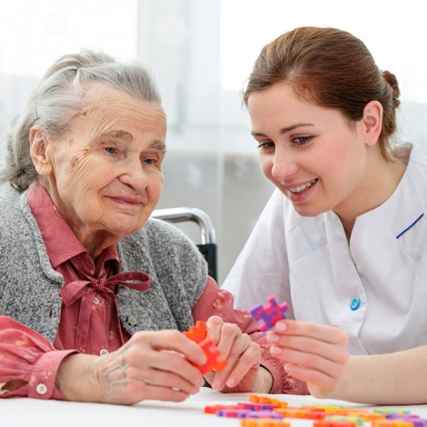
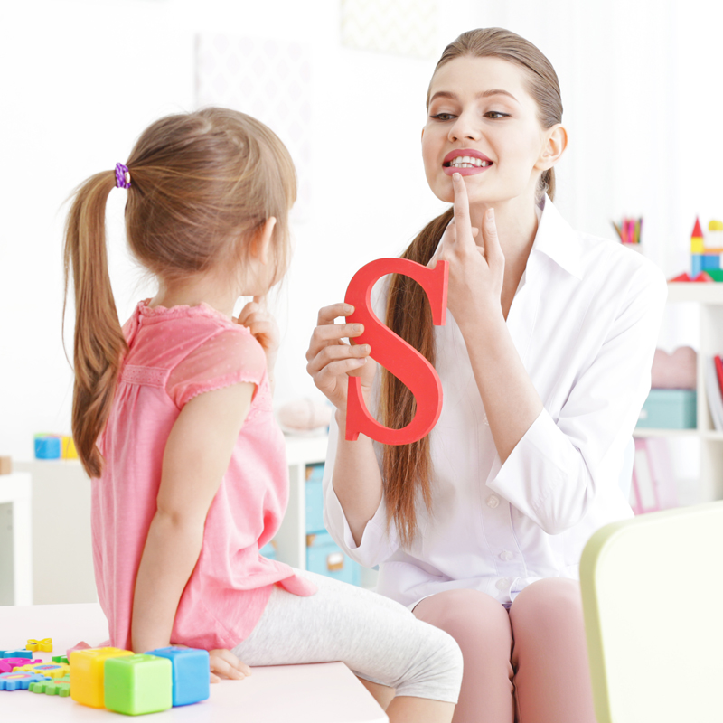

Terapia de Pareja
Crisis en tu relación de pareja.
- Resolución de conflictos, sana convivencia y comunicación asertiva.
- Infidelidad y/o desconfianza.
- Conflictos frecuentes y desacuerdos en aspectos esenciales.
- Reforzar el contacto emocional.
- Identificación y transformación de patrones de interacción disfuncional.
- Apoyo en pautas de crianza.
- Rol al ejercer la paternidad y autoridad frente a los hijos.
- Asesoría en proyecto de vida personal, en pareja y familiar.
Psicoterapia Individual
Conocimiento de sí mismo
- Exploración de emociones negativas.
- Tristeza, ansiedad, estrés, miedos.
- Apoyo en el manejo de emociones y Baja autoestima.
- Asesoría en proyecto de vida personal, en pareja y familiar.
- Tolerancia a la frustación.
- Control de Impulsos.
- Apoyo Terapeutico en manejo de duelo.
- Toma de decisiones y empoderamiento.
- Desarrollo de herramientas en habilidades sociales, comunicación asertiva y resolución de conflictos.
- Asesoría Psicológica frente a Sensación de estancamiento en su proyecto de vida ( familiar, estudiantil, profesional)
Psicología Infantil
- Autoestima, liderazgo, Depresión, Ansiedad o stress.
- Problemas de comportamiento, conducta y Trastorno negativista desafiante.
- Deserción escolar, Bajo rendimiento escolar.
- Prevención e intervención frente Bullying, acoso escolar y suicidio.
- Asesoría Psicológica frente a Déficit de atención, memoria y concentración.
- Asesoría a padres de familia frente a pautas de crianza, comunicación asertiva, ejercicio de autoridad.
- Asesoría frente el proceso de adaptación a ambientes escolares.
Psicología para adolescentes
- Apoyo psicológico en la transición de cambio de niñez a adolescencia, maduración de su cuerpo o sexualidad.
- Comportamientos de deseo o exploración frente consumo alcohol o drogas.
- Depresión, ansiedad, tristeza, baja autoestima, timidez, tolerancia a la frustación.
- Trastornos de alimentación y dificultades para relacionarse con otros.
- Deserción escolar y Orientación Vocacional.
- Asesoría profesional sobre sexualidad.
- Desarrollo de habilidades sociales y de liderazgo.
- Herramientas para el uso adecuado de internet y redes sociales.

Asesoría en cambio/selección de Colegio
¿Cuál es el mejor colegio para mi hijo/a?
Te invitamos a conocer nuestro servicio de asesorías para que elijas la mejor institución.
- Análisis del perfil familiar y proyecciones.
- Implementación de pruebas.
- Información de instituciones educativas acordes con el perfil del estudiante y la familia.
"Te orientamos frente al modelo educativo más benéfico para tu hijo, tú eliges el colegio de tu preferencia."
Terapia Ocupacional
Terapia para Bebés
- Estimulación temprana, gateo y rolado
- Desarrollo motor fino y grueso
- Terapia de interación sensorial
Terapia para niños y adolescentes
- Proceso de atención, memoria y concentración
- Motricidad fina, gruesa e inquietud motora
- Seguimiento de Instrucciones y ejecución de tareas
- Deficit de atención e Hiperactividad
Terapia para adultos y adulto mayor
- Estimulación cognitiva
- Asesoría en actividades diarias del adulto

Terapia de Lenguaje/Fonoaudiología
Terapia para Bebés
- Estimulación de lenguaje.
- Terapia Miofuncional y deglución.
- Fisura Labiopalatina.
Terapia para niños y adolescentes
- Problemas de Habla, voz, lenguaje y aprendizaje.
- Dificultades en lectura y escritura.
- Deglución atipica, tartamudez.
Terapia adultos y adulto mayor
- Rehabilitación de habla, lenguaje, deglución.
- Transtornos cognitivos como demencia o lesión del hemisferio derecho.
